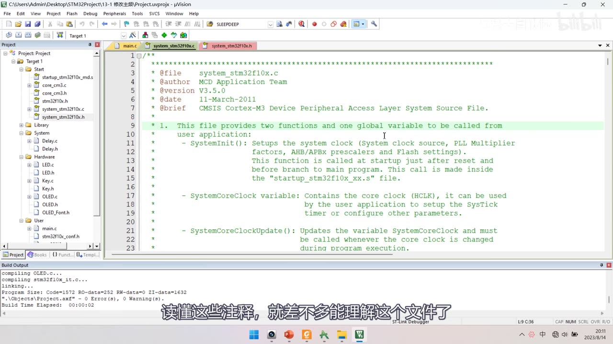
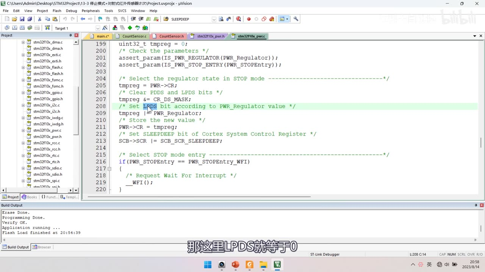

[13-2] 修改主频&睡眠模式&停止模式&待机模式 — 学习笔记
一句话结论
改主频只动 system_stm32f10x.c 第 106～116 行宏；睡眠加 __WFI()；停止模式先开 PWR 时钟、唤醒后立刻 SystemInit()；待机靠 RTC 闹钟或 WKUP(PA0) 唤醒，唤醒从头执行。
1. 本集定位
- 模块 13 的代码课：4 个程序全部「复制现成工程 → 逐行写码 → 下载验证」，无下集预告（结尾是待机电流实测）。
- 低功耗模式的下载方式：按住复位 → 点下载 → 松手。
- 接线与对应章节基本一样：
13-1 修改主频＝最小系统板 + ST-Link + OLED；13-2 睡眠模式+串口＝串口 + OLED；13-3 停止模式+红外计次＝对射式红外传感器 + OLED；13-4 待机模式+实时时钟＝12-2实时时钟工程 + 一根 PA0/WKUP 绿色飞线。
| 程序 | 复制来源 |
|---|---|
13-1 修改主频 |
OLED 显示屏工程 |
13-2 睡眠模式+串口发送+接收 |
9-2 串口收发工程 |
13-3 停止模式+对射式红外传感器计次 |
5-1 工程 |
13-4 待机模式+实时时钟 |
12-2 实时时钟工程 |

图 1：接线图 13-1 修改主频——最小系统板 + ST-Link + OLED（4 根 I2C 线 + 电源），右下角注明 *此图为OLED下方被遮挡的接线图

图 2：接线图 13-4 待机模式+实时时钟——红圈标出 PA0/WKUP 引脚，绿色飞线接入（待机唤醒用）
2. 程序①：修改主频（13-1 修改主频）
2.1 system_stm32f10x.c 文件头注释
- 文件头写明：本文件提供 2 个函数 + 1 个全局变量。
SystemInit()：设置系统时钟源、PLL 倍频因子、AHB/APBx 预分频、Flash 设置；在 startup 文件里、复位之后、跳转到 main 之前被调用。SystemCoreClock：全局变量，保存核心时钟 HCLK，可用于配置 SysTick 定时器或其他参数。SystemCoreClockUpdate()：更新SystemCoreClock变量；程序运行中改变了核心时钟就必须调用。
- 文件版本
V3.5.0、日期11-March-2011（CMSIS Cortex-M3 Device Peripheral Access Layer System Source File）。

图 3：system_stm32f10x.c 文件头注释——@file / @author MCD Application Team / @version V3.5.0 / @date 11-March-2011；正文 1. 列出 2 函数 + 1 变量
2.2 RCC 时钟树（图8）
- HSE 8MHz（外部晶振）→ PLLXTPRE（可 /2）→ PLLSRC 选源 → PLLMUL（×4～×16）→ PLLCLK → SW 选择 → SYSCLK 72MHz。
- AHB 预分频 → HCLK 72MHz；APB2 预分频 /1 → PCLK2 72MHz；APB1 预分频 /2 → PCLK1 36MHz。
- 另有 LSE 32.768kHz → RTCCLK、LSI 40kHz → IWDGCLK、MCO 时钟输出、USB 预分频。
- 此前课程一直保持默认配置（晶振 8M、AHB/APB2＝72M、APB1＝36M），但这些都不是绝对的，随意改可能出问题。
2.3 改主频的宏（第 106～116 行）
- 文件用预编译指令分两组：
#if defined(STM32F10X_LD_VL)…（VL 型）与#else（其他型号）。 - VL 型的完整条件：
#if defined(STM32F10X_LD_VL) || (defined STM32F10X_MD_VL) || (defined STM32F10X_HD_VL)。 - F103C8T6 是 MD 中容量，看
#else这一组；组内 6 个宏（默认只放开 72MHz）：
| 宏 | 值 | 说明 |
|---|---|---|
SYSCLK_FREQ_HSE |
HSE_VALUE |
不倍频，直接用 HSE（8MHz） |
SYSCLK_FREQ_24MHz |
24000000 | HSE/2×6 |
SYSCLK_FREQ_36MHz |
36000000 | HSE/2×9（本集演示用它） |
SYSCLK_FREQ_48MHz |
48000000 | HSE×6 |
SYSCLK_FREQ_56MHz |
56000000 | HSE×7 |
SYSCLK_FREQ_72MHz |
72000000 | HSE×9（默认） |
- 宏区原文六行全部被注释：
/* #define SYSCLK_FREQ_HSE HSE_VALUE */、/* #define SYSCLK_FREQ_24MHz 24000000 */、/* #define SYSCLK_FREQ_36MHz 36000000 */、/* #define SYSCLK_FREQ_48MHz 48000000 */、/* #define SYSCLK_FREQ_56MHz 56000000 */、/* #define SYSCLK_FREQ_72MHz 72000000 */。 - 用法：把当前频率的宏注释掉、把目标频率的宏解除注释（想改 36M 就注掉 72M 宏、放开 36M 宏）。

图 4：第 106～116 行时钟宏区——#else 分支的 6 个宏（SYSCLK_FREQ_HSE～SYSCLK_FREQ_72MHz）全部处于注释状态

图 5：PPT「RCC时钟树」图8——HSI 8MHz、HSE 4-16MHz → PLLXTPRE/PLLSRC → PLLMUL（×4～×16）→ PLLCLK → SW → SYSCLK 72MHz；AHB → HCLK 72MHz、APB2 /1 → PCLK2 72MHz、APB1 /2 → PCLK1 36MHz；红圈标 HSE 与 APB1 的 36MHz
2.4 ⚠ 文件是只读的
- 工程树里
system_stm32f10x.c的文件图标带锁标记，说明它是只读的。 - 解除：右键「打开包含的文件夹」→ 右键该文件 → 属性 → 取消「只读」勾选 → 确定；也可对整个文件夹操作，之后回到 Keil 才能编辑。
2.5 SetSysClockToXX 内部（以 72M 为例）
/* PCLK2 = HCLK */
RCC->CFGR |= (uint32_t)RCC_CFGR_PPRE2_DIV1;
/* PCLK1 = HCLK */
RCC->CFGR |= (uint32_t)RCC_CFGR_PPRE1_DIV1;
/* Select HSE as system clock source：先清 SW 位，再选 HSE */
RCC->CFGR |= (uint32_t)RCC_CFGR_SW_HSE;
/* Wait till HSE is used as system clock source */
while ((RCC->CFGR & (uint32_t)RCC_CFGR_SWS) != (uint32_t)0x04) { }
...
else
{
/* If HSE fails to start-up, the application will have wrong clock
configuration. User can add here some code to deal with this error */
}
- 预分频与切换：
/* PCLK2 = HCLK */ …PPRE2_DIV1;、/* PCLK1 = HCLK */ …PPRE1_DIV1;之后，/* Select HSE as system clock source */ … RCC_CFGR_SW_HSE;，并while ((RCC->CFGR & RCC_CFGR_SWS) != 0x04) { }等切换完成。 - 72M 档的完整流程：
RCC_CR_PLLON使能 PLL →while(!(RCC->CR & RCC_CR_PLLRDY));等就绪 →RCC_CFGR_SW切到 PLL →while((RCC->CFGR & RCC_CFGR_SWS) != 0x08);等切换完成（对应注释/* PLL configuration: PLLCLK = HSE * 9 = 72 MHz */）。 - PLL 配置段：先按位取反
RCC_CFGR_PLLSRC | RCC_CFGR_PLLXTPRE | RCC_CFGR_PLLMULL再与运算清位，然后RCC->CFGR |= (uint32_t)(RCC_CFGR_PLLSRC_HSE | RCC_CFGR_PLLMULL7);选 HSE×7（/* PLL configuration: PLLCLK = HSE * 7 = 56 MHz */）。 - 使能与等待：
/* Enable PLL */ RCC->CR |= RCC_CR_PLLON;之后/* Wait till PLL is ready */ while((RCC->CR & RCC_CR_PLLRDY) == 0) { }。 - 72M 档对应
SetSysClockTo72，else分支注释为else { /* If HSE fails to start-up, the application will have wrong clock configuration. User can add here some code to deal with this error */ }，其后接#elif defined SYSCLK_FREQ_24MHz。 - 各档算式：
SetSysClockTo56→ HSE×7＝56M；SetSysClockTo48→ HSE×6＝48M；SetSysClockTo36→ HSE/2×9＝36M；SetSysClockTo24→ HSE/2×6＝24M；SetSysClockToHSE→ 不分频直通。

图 6：SetSysClockTo56 的 PLL 配置段——/* PLL configuration: PLLCLK = HSE * 7 = 56 MHz */，随后写 PLLSRC/PLLMULL 位并等 PLL 就绪

图 7：SetSysClockTo72 的 AHB/APB 与 HSE 切换段——/* PCLK2 = HCLK */ …PPRE2_DIV1;、/* PCLK1 = HCLK */ …PPRE1_DIV1;、选 HSE 作系统时钟并等 SWS 就位
2.6 main 与现象验证
OLED_ShowString(1, 1, "SYSCLK:");
OLED_ShowNum(1, 8, SystemCoreClock, 8); /* 显示当前主频 */
while (1)
{
OLED_ShowString(2, 1, "Running");
Delay_ms(500);
OLED_ShowString(2, 1, " ");
Delay_ms(500);
}
- 72M 时 OLED 显示
SYSCLK:72000000，Running闪烁周期 1s（500ms 亮 + 500ms 灭）。 - 改 36M（注掉 72M 宏、放开 36M 宏 → 重新编译下载）后显示
SYSCLK:36000000，Running周期变 2s，说明主频确实降低了。 - 连锁影响：
Delay_us里默认按 72M 写死了常量，Delay_ms也基于它，改主频后所有计时都不准；通用做法是按SystemCoreClock动态计算，不推荐随便修改主频。
3. 程序②：睡眠模式（13-2 睡眠模式+串口发送+接收）
3.1 为什么用睡眠、能不能用其它模式
- 复制
9-2串口收发工程：收到一个字节 → 中断置标志 → 主循环查到后读数据并回发。 - 一直没收到数据时主循环不断查询标志位，是无意义的耗电操作；思路是空闲时让 CPU 睡，中断来了再醒来干活。
- 三种模式对「串口随时待命」的适用性：
- 睡眠 ✓：程序不执行，但 USART 硬件电路仍能接收数据，收到后产生中断唤醒 CPU。
- 停止 ✗：1.8V 区域时钟全关，USART 中断不能唤醒停止模式（只有 EXTI 能）。
- 待机 ✗：唤醒源固定 4 个，也不适合。
3.2 代码：一句 __WFI()
while (1)
{
if (Serial_GetRxFlag() == 1)
{
RxData = Serial_GetRxData();
Serial_SendByte(RxData);
OLED_ShowHexNum(1, 8, RxData, 2);
}
OLED_ShowString(2, 1, "Running");
Delay_ms(100);
OLED_ShowString(2, 1, " ");
Delay_ms(100);
__WFI(); /* 主循环最后：进入睡眠，等中断唤醒 */
}
- 只需在主循环最后加
__WFI();；也可用__WFE()，区别只是唤醒方式，推荐 WFI 的中断唤醒（本工程只演示 WFI）。 __WFI是 CPU 的内核汇编指令（转到定义就到头了，看不到实现），记住格式即可。SLEEPDEEP=0是默认值 → 直接就是睡眠模式，不必配寄存器。- 要配
SLEEPDEEP/SLEEPONEXIT/SEVONPEND，必须直接操作内核的SCB->SCR（Cortex-M3 编程手册 4.4 系统控制块 SCB，属内核、不是 PWR 库）：- Bit 4
SEVONPEND：0＝只有使能的中断或事件能唤醒；1＝使能的事件和所有中断（含被禁止的中断）都能唤醒。 - Bit 2
SLEEPDEEP：0＝Sleep（睡眠）；1＝Deep sleep（深度睡眠）。 - Bit 1
SLEEPONEXIT：0＝中断返回时不睡；1＝中断返回时进入 sleep。 - 在 WFI 上面写
SCB->SCR |= SCB_SCR_SLEEPDEEP;可置深度睡眠，本工程保持默认 0 即可。
- Bit 4
3.3 现象
- 串口助手（COM10、9600 8N1）发一个字节，STM32 回传并显示
RxData:66。 - 只有收发那一刻
Running才闪一次——空闲时 CPU 一直在睡眠，不影响功能又省电。 - 初版 main.c 的关键行：
#include "Serial.h"、uint8_t RxData;、OLED_Init();、OLED_ShowString(1, 1, "RxData:");、Serial_Init();，循环体为while (1) { if (Serial_GetRxFlag() == 1) { RxData = Serial_GetRxData(); Serial_SendByte(RxData); OLED_ShowHexNum(1, 8, RxData, 2); } }。

图 8：程序②的 main.c 初版——串口接收判断、回发与 OLED 显示；外层是 while (1) 空转

图 9：程序②现象——OLED 显示 RxData:66，串口助手 COM10、9600、数据位 8、停止位 1、校验位无

图 10：Cortex-M3 编程手册 SCB_SCR 寄存器——Bit 4 SEVONPEND、Bit 2 SLEEPDEEP（0：Sleep；1：Deep sleep）、Bit 1 SLEEPONEXIT
4. 程序③：停止模式（13-3 停止模式+对射式红外传感器计次）
4.1 为什么用停止模式
- 复制
5-1工程：原代码CounterSensor_Get()不断轮询，没有中断信号时就是无意义的耗电操作。 - 本代码可以用外部中断唤醒，所以适合用更省电的停止模式：停止模式下 1.8V 区域时钟全关，但外部中断的工作不需要时钟（EXTI 硬件触发）。
- 表8（红圈）：停机唤醒列＝「任一外部中断」，对 1.8V 区域时钟的影响＝「关闭所有 1.8V 区域的时钟」。
4.2 代码：开 PWR 时钟 + PWR_EnterSTOPMode
/* 停止模式和待机模式都需要 PWR 外设 → 必须先开 PWR 时钟 */
RCC_APB1PeriphClockCmd(RCC_APB1Periph_PWR, ENABLE);
...
while (1)
{
/* 显示与计次 */
OLED_ShowString(2, 1, "Running");
Delay_ms(100);
OLED_ShowString(2, 1, " ");
Delay_ms(100);
PWR_EnterSTOPMode(PWR_Regulator_ON, PWR_STOPEntry_WFI); /* 进入停止模式 */
/* 唤醒后必须重配时钟，否则主频是 HSI 的 8MHz */
SystemInit();
}
- ① 先开 PWR 时钟：
RCC_APB1PeriphClockCmd(RCC_APB1Periph_PWR, ENABLE);——不开则写寄存器无效、读回来全是 0。 - ② 调用
PWR_EnterSTOPMode(PWR_Regulator_ON, PWR_STOPEntry_WFI)：参数一PWR_Regulator_ON（调节器开启）/PWR_Regulator_LowPower（低功耗，更省电、唤醒多一段延时）；参数二PWR_STOPEntry_WFI/PWR_STOPEntry_WFE。 - 函数内部（
stm32f10x_pwr.c）：uint32_t tmpreg = 0;、assert_param(IS_PWR_REGULATOR(PWR_Regulator));、assert_param(IS_PWR_STOP_ENTRY(PWR_STOPEntry));之后读寄存器PWR->CR到 tmpreg（tmpreg = PWR->CR;）。 - 清 PDDS 与 LPDS：
tmpreg &= CR_DS_MASK（源码注释/* Clear PDDS and LPDS bits */ tmpreg &= CR_DS_MASK;，单独写就是tmpreg &= CR_DS_MASK;），清 PDDS＝PDDS=0选停止模式。 - 设 LPDS 并写回：
tmpreg |= PWR_Regulator;（源码/* Set LPDS bit according to PWR_Regulator value */ tmpreg |= PWR_Regulator;），调节器开启时 LPDS=0；再PWR->CR = tmpreg;（源码/* Store the new value */ PWR->CR = tmpreg;）。 - 置位进停止：
SCB->SCR |= SCB_SCR_SLEEPDEEP（源码/* Set SLEEPDEEP bit of Cortex System Control Register */ SCB->SCR |= SCB_SCR_SLEEPDEEP;），然后/* Select STOP mode entry */ if (PWR_STOPEntry == PWR_STOPEntry_WFI) { __WFI(); }，否则执行__WFE()。
4.3 坑：唤醒后主频变 8M
- 现象：遮挡计次正常，但唤醒后
Running明显变慢。 - 原因：PPT 停止模式条目写明「当一个中断或唤醒事件导致退出停止模式时，HSI 被选为系统时钟」。
- 首次复位时
SystemInit配的是 HSE×9＝72M，退出停止模式后 PLL/HSE 没有自动恢复，默认用 HSI 8MHz。 - 解决：在
PWR_EnterSTOPMode()后面立刻再调一次SystemInit()，主频恢复 72M。

图 11：PPT 表8（红圈标出停机行、「任一外部中断」、「关闭所有 1.8V 区域的时钟」）——讲停止模式为什么能被外部中断唤醒

图 12：程序③现象——OLED 显示 Count:00002 与 Running

图 13：PWR_EnterSTOPMode 源码（stm32f10x_pwr.c L199 至 L220）——断言、读 CR、清 PDDS/LPDS、按参数设 LPDS、写回、置 SLEEPDEEP、按参数 WFI/WFE

图 14：PPT「停止模式」7 条要点——「当一个中断或唤醒事件导致退出停止模式时，HSI 被选为系统时钟」正是主频变 8M 的原因
5. 程序④：待机模式（13-4 待机模式+实时时钟）
5.1 用 RTC 闹钟唤醒
- 复制
12-2 实时时钟工程；显示改成CNT:/ALR:/ALRF:，去掉年月日时分秒和 DIV 的显示。 - 坑：
RTC_ALR寄存器是只写的（手册寄存器描述里只有W、没有R），读不回来；读写缩写对照：W＝只写、R＝只读、rw＝读写。 - 所以必须用变量
Alarm保存闹钟值再显示。 - 显示与闹钟的关键行：
OLED_ShowString(1, 1, "CNT :")/(2, 1, "ALR :")/(3, 1, "ALRF:");、uint32_t Alarm = RTC_GetCounter() + 10;、RTC_SetAlarm(Alarm);、OLED_ShowNum(2, 6, Alarm, 10);。 - 主循环读值：
while (1) { OLED_ShowNum(1, 6, RTC_GetCounter(), 10); OLED_ShowNum(3, 6, RTC_GetCounter(), 10); }。
uint32_t Alarm = RTC_GetCounter() + 10; /* 当前秒数 + 10s */
RTC_SetAlarm(Alarm);
OLED_ShowNum(2, 6, Alarm, 10); /* 显示闹钟值：必须用变量，不能读寄存器 */
- 一句话：
uint32_t Alarm = RTC_GetCounter() + 10; RTC_SetAlarm(Alarm);即约 10s 后唤醒。 - 现象：
CNT不断自增、ALR是复位后 10s；CNT增长到与ALR相等（CNT = ALR）的最后时刻ALRF置 1。
5.2 进入待机
/* PWR 时钟：本工程前面已有，但为了独立可用，这里再开一次也无妨 */
RCC_APB1PeriphClockCmd(RCC_APB1Periph_PWR, ENABLE);
while (1)
{
OLED_ShowNum(1, 6, RTC_GetCounter(), 10);
OLED_ShowNum(3, 6, RTC_GetFlagStatus(RTC_FLAG_ALR), 1);
OLED_ShowString(4, 1, "Running");
Delay_ms(100);
OLED_ShowString(4, 1, " ");
Delay_ms(100);
OLED_ShowString(4, 9, "STANDBY");
Delay_ms(1000); /* 测电流时改 10000 */
OLED_ShowString(4, 9, " ");
Delay_ms(100);
OLED_Clear(); /* 模拟关闭外部模块 */
PWR_EnterSTANDBYMode(); /* 进入待机模式 */
}
- 虽然
12-2工程里已开过 PWR 时钟，本程序再写一次RCC_APB1PeriphClockCmd(RCC_APB1Periph_PWR, ENABLE)（重复开启没问题），可降低对 RTC 代码的依赖。 - 标志读取：
RTC_GetFlagStatus(RTC_FLAG_ALR)判断闹钟标志，进待机前再PWR_EnterSTANDBYMode();。 - 进待机的完整动作：
OLED_ShowString(4, 9, "STANDBY"); Delay_ms(1000); OLED_ShowString(4, 9, " "); Delay_ms(100); OLED_Clear(); PWR_EnterSTANDBYMode();（图 17），简写为OLED_ShowString(4, 9, "STANDBY"); Delay_ms(1000); … OLED_Clear(); PWR_EnterSTANDBYMode();。 PWR_EnterSTANDBYMode()内部：清PWR_CSR的 WUF 唤醒标志 →PDDS=1选待机模式 → 设内核SLEEPDEEP位 → 执行__WFI()。- 待机不区分 WFI/WFE：唤醒条件固定为那 4 个信号（WKUP 上升沿 / RTC 闹钟 / NRST / IWDG），函数里固定用 WFI。
- 现象：复位后
Running闪烁、随后CNT不再刷新（已进待机）→ RTC 闹钟唤醒 →CNT与 ALR 重新刷新、Running再闪，说明唤醒后程序是从头开始执行的。 - 因为待机退出＝程序从头跑，
PWR_EnterSTANDBYMode();之后的代码永远执行不到，while (1)其实可以去掉。
5.3 WKUP 引脚唤醒与「必须关外部模块」
PWR_WakeUpPinCmd(ENABLE); /* 使能 WKUP 引脚（PA0），放在 main 靠前位置 */
PWR_WakeUpPinCmd(ENABLE)使能位于 PA0 的 WKUP 引脚；这个引脚默认下拉，接高电平即可唤醒，不需要做 GPIO 初始化，所以放在 main 靠前位置即可。- 进待机前必须关掉外部模块：示例用
OLED_Clear()模拟，真实产品里要切断外挂模块的电源。 - 外挂模块的耗电远超 STM32 本身，这需要精心设计硬件电路。
5.4 实测电流
- 手册说待机电流约 3µA，实测：直接测 1mA 多（电源指示灯耗电）→ 去掉指示灯仍有几百 µA → 继续排查后降到 3µA，与手册数据基本一致。
- 正常工作电流 20 多 mA。
- 为便于测量，把
STANDBY显示延长到 10s（OLED_ShowString(4, 9, "STANDBY"); Delay_ms(10000);）、待机闹钟改成 100s（uint32_t Alarm = RTC_GetCounter() + 100;）。

图 15：程序④ main.c——CNT/ALR/ALRF 的显示与闹钟赋值，最后一行读 RTC_GetFlagStatus(RTC_FLAG_ALR)

图 16：程序④ main.c——显示 CNT/ALR/ALRF、Running 闪烁，末尾 PWR_EnterSTANDBYMode();

图 17：程序④ 进待机前的动作——显示 STANDBY、延时后清屏，再 PWR_EnterSTANDBYMode();

图 18：程序④ 主循环末尾——OLED_Clear() 清屏（模拟关闭外部模块）后进待机

图 19：测电流改造版——多了 PWR_WakeUpPinCmd(ENABLE);（第 17 行）、闹钟改 100s、STANDBY 显示 10s
坑与易错点
- 4 个程序的复制来源别混：
13-1←OLED、13-2←9-2串口、13-3←5-1、13-4←12-2实时时钟。 SYSCLK_FREQ_*宏在第 106～116 行的#else组（F103C8T6 是 MD），共 6 档；改法＝注掉当前、放开目标。system_stm32f10x.c默认只读：先取消只读属性才能改。- PLL 倍频关系：72M＝HSE×9、56M＝HSE×7、48M＝HSE×6、36M＝HSE/2×9、24M＝HSE/2×6；AHB /1、APB2 /1、APB1 /2。
- HSE 起振失败走
else：主频仍是 HSI 8M——「发现主频 8M」就是 HSE 有问题。 - 改主频连带所有计时：
Delay_us写死 72M，改完要调SystemCoreClockUpdate()；不推荐随便改主频。 - 睡眠只需
__WFI()：SLEEPDEEP=0默认就是睡眠；配置SCB->SCR属内核，不是 PWR 库。 __WFI/__WFE是 CMSIS 内核指令，不是库函数；推荐用 WFI 的中断唤醒。- 停止模式两坑：PWR 时钟必须开（否则写寄存器无效、读回全 0）；唤醒后 HSI 8M 成系统时钟，必须立刻
SystemInit()。 PWR_EnterSTOPMode参数：PWR_Regulator_ON/_LowPower（LPDS=0/1）与PWR_STOPEntry_WFI/_WFE。RTC_ALR只写：读不回来，必须用变量保存闹钟值再显示。- 待机不区分 WFI/WFE：唤醒源固定 4 个（WKUP(PA0)/RTC 闹钟/NRST/IWDG）。
- 待机唤醒后程序从头跑：
PWR_EnterSTANDBYMode()之后的代码永远执行不到。 PWR_WakeUpPinCmd(ENABLE)不用 GPIO 初始化：WKUP(PA0) 默认下拉、接高唤醒。- 进待机前必须关外部模块：外挂模块耗电远超 STM32 本身（示例只
OLED_Clear模拟）。 - 实测待机 3µA 与手册吻合；正常 20 多 mA——测之前先处理电源指示灯等耗电件。
- 低功耗模式下下载：按住复位 → 点下载 → 松手。